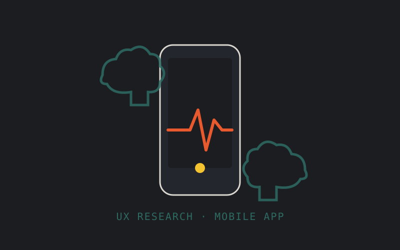

UX / UI · Trabajo final de facultad
Diseño de una app móvil de gestión de emergencias, de la investigación a la fundamentación de cada pantalla.

ASSIST nació como proyecto final de la cursada de UX/UI: diseñar una app móvil para la gestión de emergencias, donde cada segundo y cada decisión de diseño importan. El trabajo abarcó todo el proceso, desde la investigación hasta la fundamentación pantalla por pantalla.
El proyecto se presentó de forma oral, enlazando cada decisión de diseño con los artefactos de investigación que la sustentaban: por qué esa jerarquía visual, por qué ese flujo y no otro, y qué problema puntual resuelve cada pantalla.
✎ Sumá acá capturas de tus wireframes o del prototipo en Figma cuando los tengas a mano